Escucha de la elecciones presidenciales chilenas de 20205 en Reddit
Un enfoque computacional
Matías Deneken & Gabriel Saavedra
¿Qué es Reddit?
Reddit es una plataforma de redes sociales tipo foro donde los usuarios envían, comparten y votan contenido, el cual se organiza en comunidades llamadas subreddits dedicadas a diferentes temas.
Es un lugar para el debate, la interacción y el descubrimiento de información y contenido, funcionando como una red de comunidades especializadas donde los usuarios encuentran a otros con intereses similares.
Usamos Reddit como una propuesta piloto de escucha social‚Ķ y como ensayo y error üòÖ
Introducción
El análisis de conversaciones digitales permite comprender fenómenos sociales en contextos de alta conflictividad.
En Chile, su relevancia aumenta tras el estallido social (2019) y los procesos constitucionales fallidos (2020–2023).
Redes como Reddit ofrecen un espacio deliberativo poco explorado frente a Twitter/X, TikTok o Facebook.
La polarización digital afecta ciudadanía, instituciones, medios y organizaciones.
Las redes sociales son hoy espacios clave de producción de sentido colectivo.
Urge contar con metodologías rigurosas que superen los límites de encuestas tradicionales y de herramientas comerciales de social listening.
Objetivo: Analizar conversaciones digitales sobre la elección presidencial chilena 2025 mediante un sistema de escucha social basado en ciencia de datos
MVP
Hipótesis: ¿Es posible transformar conversaciones digitales en insights útiles sobre candidaturas presidenciales (temas, emociones, riesgos)?
Fuente: Subreddits chilenos con menciones a candidatos 2025.
Procesamiento:
Modelo LDA (tópicos).
Clasificador de emociones/valencia.
Objetivo: Validar densidad, estabilidad y coherencia discursiva en Reddit frente a plataformas masivas.
MVP
Valor esperado:
Periodistas → detección temprana de encuadres y temas.
Políticas públicas → monitoreo de percepciones y riesgos narrativos.
Academia → series comparables de tópicos y emociones.

Vamos al caso…
Métodos
Fuentes: Subreddits chilenos (r/RepublicadeChile, r/chile, r/ChilePolitico, r/chile_es, r/Santiago).
Extracción: Script en Python (PRAW), 1000 posts recientes por subreddit + todos los comentarios; exclusión de stickies; identificadores únicos (SHA-256).
Volumen inicial: 3.050 posts y 145.000 comentarios.
Filtro presidencial 2025: Kast, Matthei, Jara, Kaiser, Parisi → 789 posts y 16.800 comentarios.
Variables: título, texto, autor, fecha, puntaje, comentarios, flair, enlace; + metadatos para reconstrucción de hilos.
Ética: anonimización, respeto de Términos de Uso, no explotación comercial.Análisis
Exploración cualitativa ¿Ejército de bots?
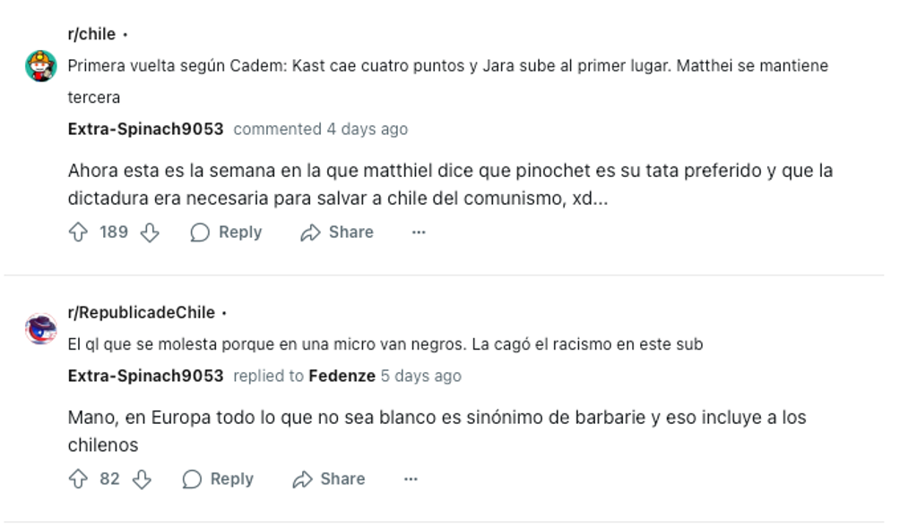Exploración cualitativa ¿Ejército de bots?
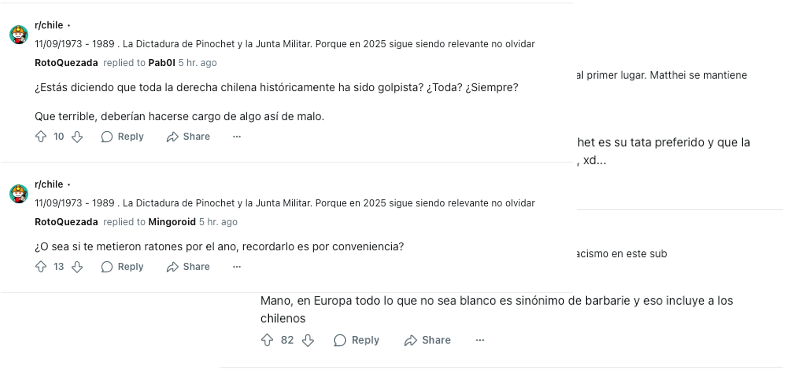Exploración cualitativa ¿Ejército de bots?
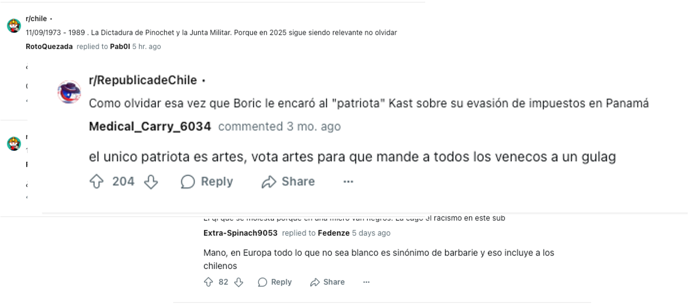Resultados Descriptivos y modelado:
Descriptivo inicial: conteo de menciones por candidato, usuarios más activos y picos de conversación → mapeo de volumen y concentración del debate.
Diccionario temático intencionado: 10 categorías (seguridad, economía, corrupción, género, migración, etc.) → clasificación semántica y marcos discursivos.
Modelo supervisado (Regresión Logística): probado para clasificar sentimiento ± hacia cada personaje.
Funcionó con métricas robustas: Precisión, Recall y F1-score ≈ 0.83.
F1-score = balance entre precisión y recall → en la práctica significa que cuando el modelo clasifica una mención como positiva o negativa, acierta en promedio 8 de cada 10 veces.
Entrenado en muestra manual (10%) y aplicado al resto del corpus.
Modelos no supervisados (LDA / STM): seguidos para explorar la estructura latente de tópicos.
LDA: clusters básicos de palabras.
STM: 6 marcos discursivos (seguridad, economía, leyes, situación política, etc.) asociados probabilísticamente a cada candidato.
Descriptivos I
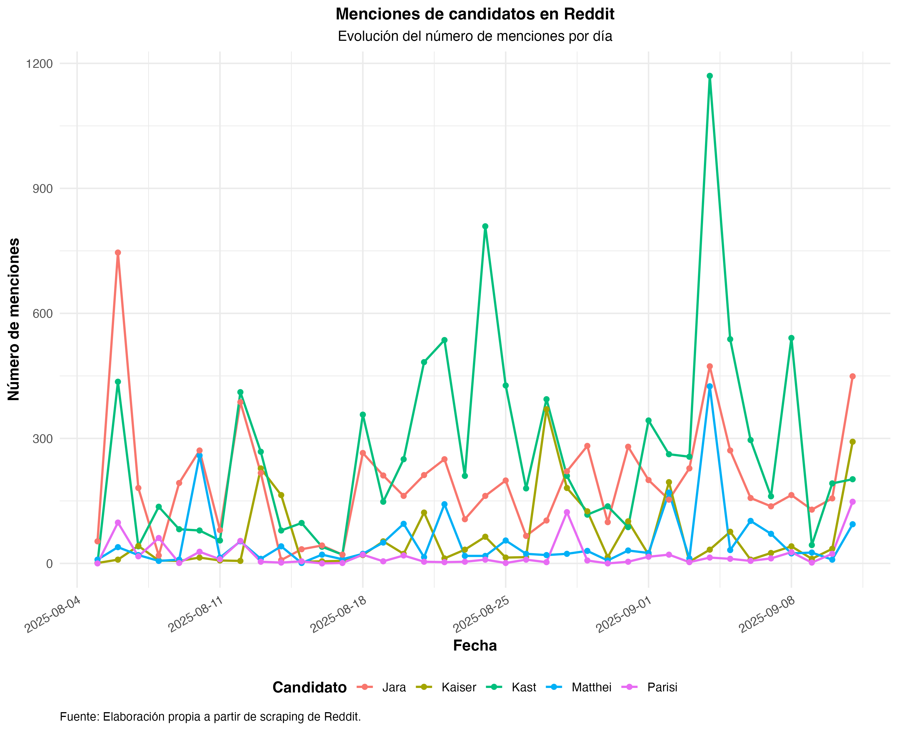Descriptivos II
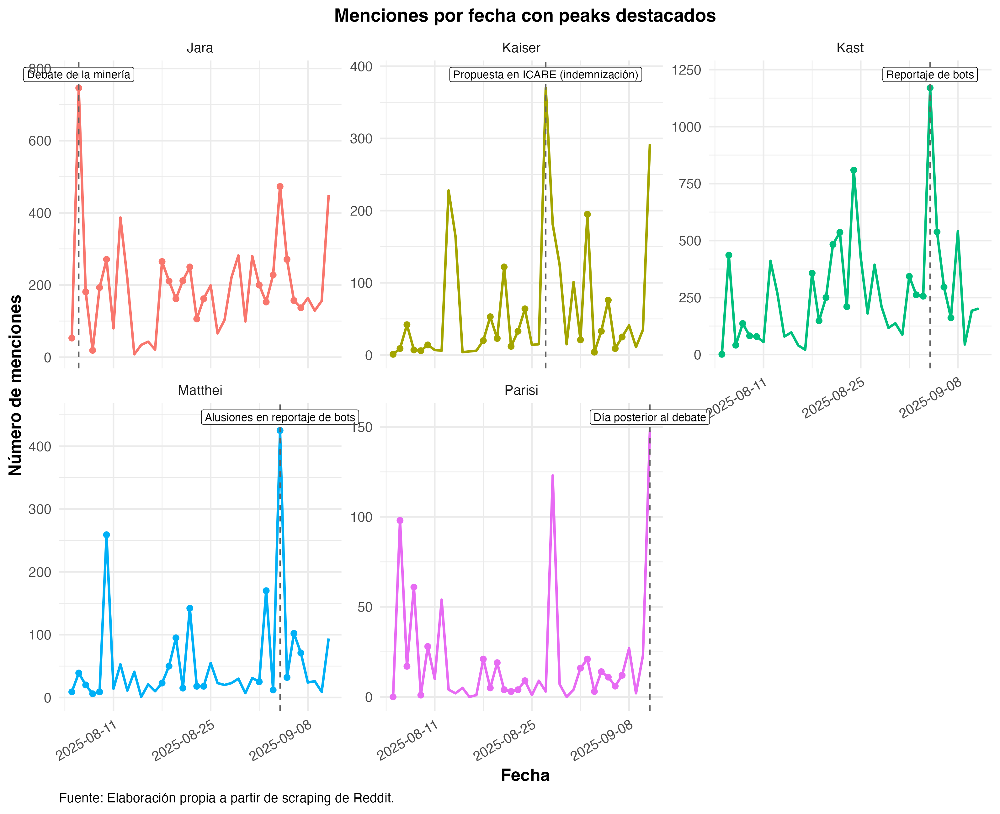Descriptivos III
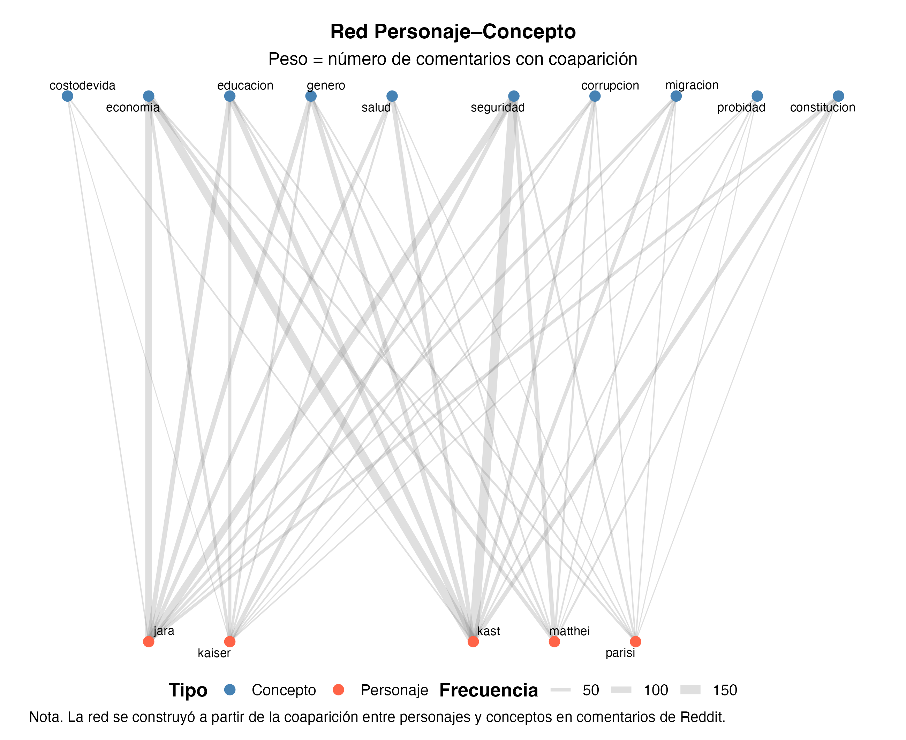Inferenciales I
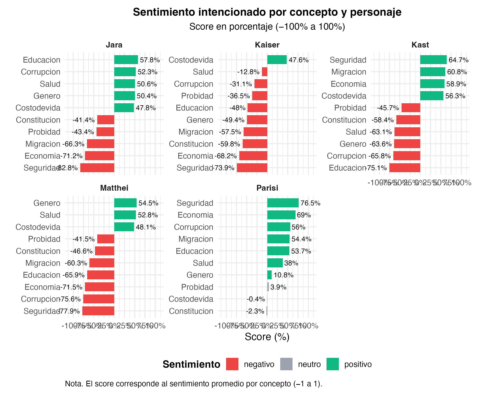Inferenciales II
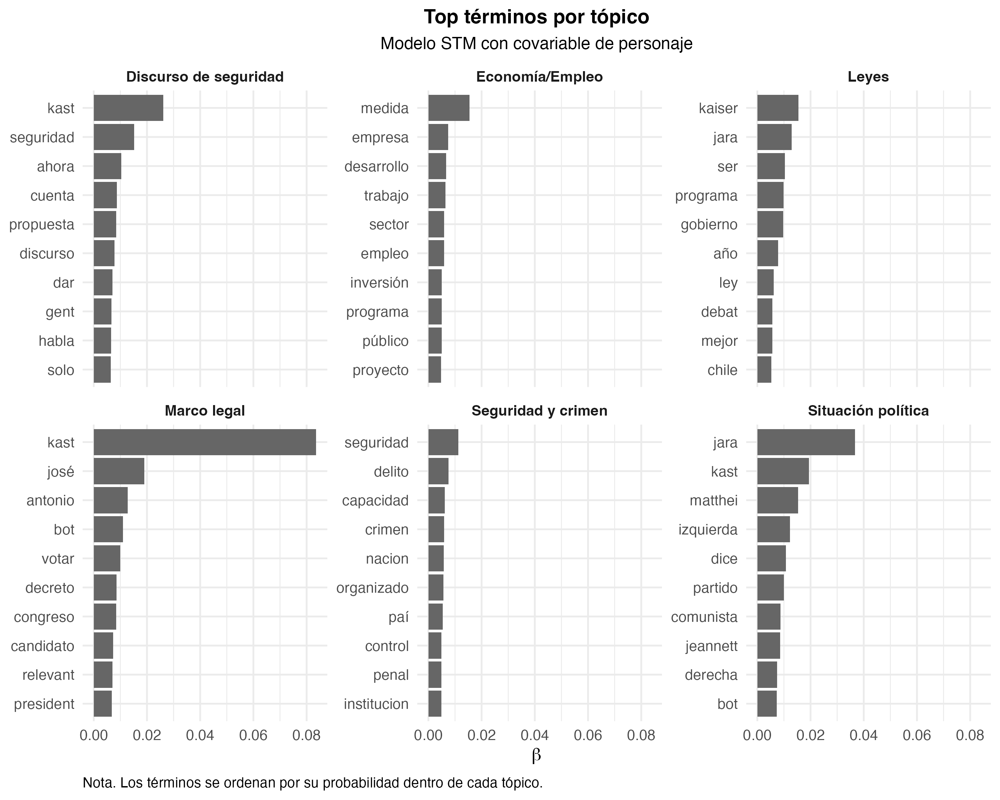Inferenciales III
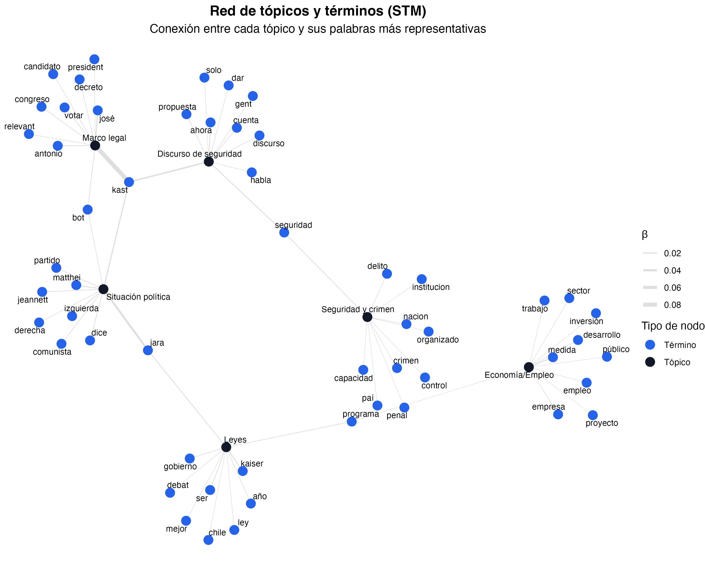Extra: Inferenciales IV
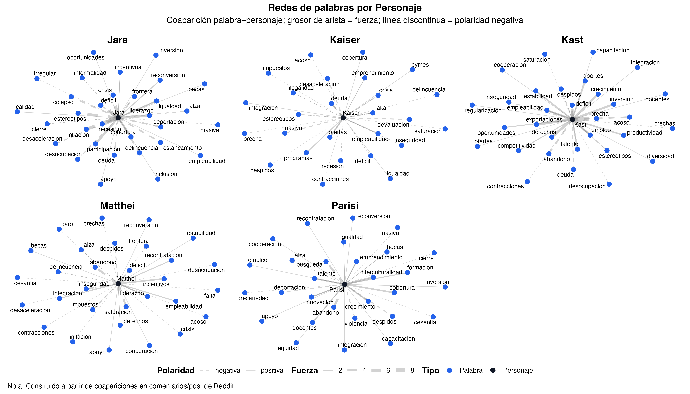Extra: Inferenciales V
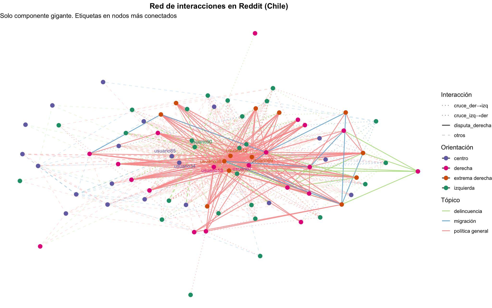Palabras finales
Universida de Concepción - CDIA